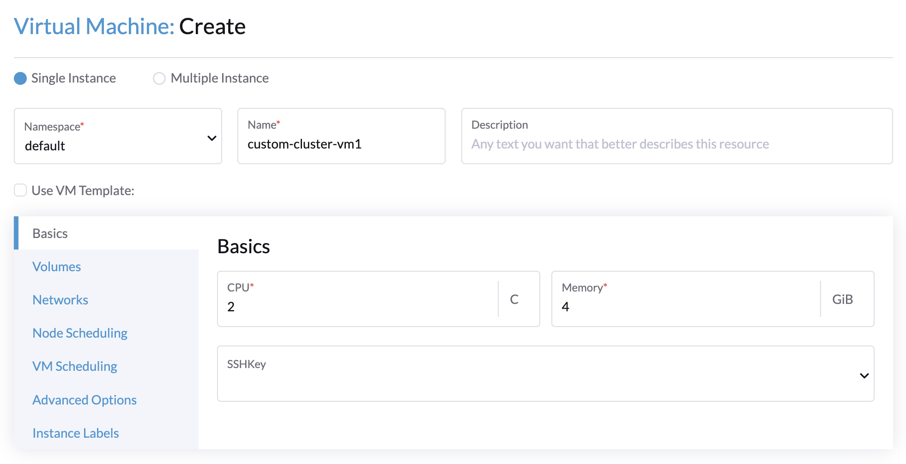
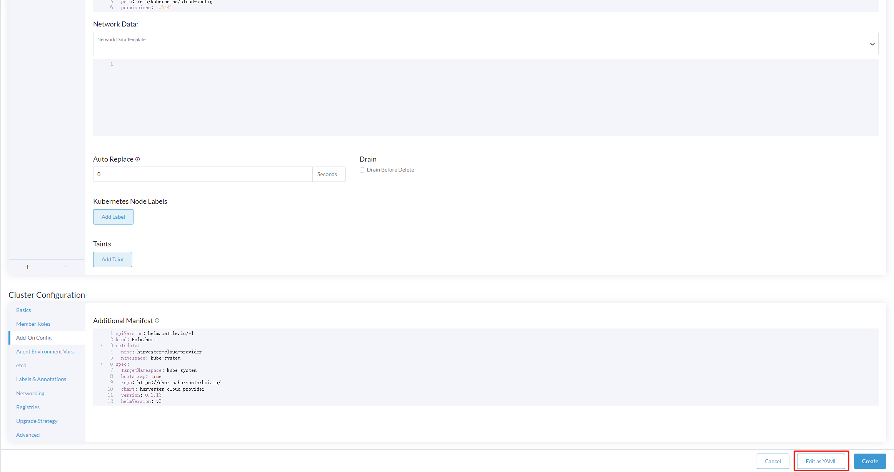

Harvester Cloud Provider
ビルトインHarvesterノードドライバーを使用して、RancherでRKE2クラスターをプロビジョニングできます。Harvesterは、ゲストKubernetesクラスターに対してロードバランサーと Harvester cluster ストレージパススルーのサポートを提供します。
後方互換性のお知らせ
|
ハーベスター クラウド プロバイダー バージョン v0.2.2 以上を使用している場合、既知の後方互換性の問題にご注意ください。Harvesterバージョンが*v1.2.0*未満で、新しいRKE2バージョン（すなわち、>= 詳細なサポートマトリックスについては、公式の*Harvester CCM & CSI Driver with RKE2 Releases*セクション（ website）を参照してください。 |
配備
前提条件
-
Kubernetesクラスターは、Harvester仮想マシンの上に構築されています。
-
Harvester仮想マシンは、ゲストKubernetesノードとして実行され、同じネームスペース内に配置されています。
-
Harvester仮想マシンゲストのホスト名は、対応するHarvester仮想マシン名と一致します。Harvester CSIドライバーを使用する場合、ゲストクラスター内の各Harvester VMは、対応するHarvester VM名と異なるホスト名を持つことができません。将来のHarvesterリリースで この制限を削除できることを期待しています。
|
各Harvester VMには、`macvlan`カーネルモジュールが必要で、これは`LoadBalancer`サービスの*DHCP* IPAMモードに必要です。 カーネルモジュールが利用可能かどうかを確認するには、VMにアクセスして次のコマンドを実行します： 次の事象が発生した場合、カーネルモジュールが欠落している可能性があります：
デフォルトでは、 ゲストクラスターがプロビジョニングされた後の手動介入の必要を排除するために、openSUSE Build Service (OBS) を使用して独自のクラウドイメージを構築してください。生成されるクラウドイメージに |
Harvester ノードドライバーを使用して RKE2 クラスターにデプロイする
Harvester ノードドライバーを使用して RKE2 クラスターを立ち上げる際には、Harvester クラウドプロバイダーを選択してください。ノードドライバーは、CSI ドライバーと CCM の両方を自動的にデプロイすることを支援します。

Rancher v2.9.0 以降、データディレクトリ構成パス フィールドを使用してクラウド設定データの特定のフォルダーを構成できます。

RKE2 クラスターへの手動デプロイ
-
スクリプト
generate_addon.shを使用してクラウド設定データを生成し、その後、すべてのカスタムノードにデータを配置してください（ディレクトリ:/etc/kubernetes/cloud-config）。curl -sfL https://raw.githubusercontent.com/harvester/cloud-provider-harvester/master/deploy/generate_addon.sh | bash -s <serviceaccount name> <namespace>このスクリプトは、Harvester クラスターを操作する際に
kubectlとjqに依存し、Harvester Clusterkubeconfig ファイルへのアクセスが与えられたときのみ機能します。kubeconfigファイルは/etc/rancher/rke2/rke2.yamlパスの Harvester 管理ノードのいずれかにあります。サーバーの IP は VIP アドレスに置き換える必要があります。コンテンツの例:
apiVersion: v1 clusters: - cluster: certificate-authority-data: <redacted> server: https://127.0.0.1:6443 name: default # ...ゲストクラスターが作成される名前空間を指定する必要があります。
出力の例:
########## cloud config ############ apiVersion: v1 clusters: - cluster: certificate-authority-data: <CACERT> server: https://HARVESTER-ENDPOINT/k8s/clusters/local name: local contexts: - context: cluster: local namespace: default user: harvester-cloud-provider-default-local name: harvester-cloud-provider-default-local current-context: harvester-cloud-provider-default-local kind: Config preferences: {} users: - name: harvester-cloud-provider-default-local user: token: <TOKEN> ########## cloud-init user data ############ write_files: - encoding: b64 content: <CONTENT> owner: root:root path: /etc/kubernetes/cloud-config permissions: '0644' -
RKE2 クラスター作成ページで、クラスター構成 画面に移動し、クラウドプロバイダー の値を 外部 に設定してください。

-
cloud-init user dataコンテンツを マシンプール > 詳細を表示 > ユーザーデータ にコピーして貼り付けてください。
-
次の
HelmChartCRD をharvester-cloud-providerに追加し、クラスター構成 > アドオン構成 > *追加のマニフェスト*に反映させてください。<cluster-name>をクラスターの名前に置き換える必要があります。apiVersion: helm.cattle.io/v1 kind: HelmChart metadata: name: harvester-cloud-provider namespace: kube-system spec: targetNamespace: kube-system bootstrap: true repo: https://raw.githubusercontent.com/rancher/charts/dev-v2.9 chart: harvester-cloud-provider version: 104.0.2+up0.2.6 helmVersion: v3 valuesContent: |- global: cattle: clusterName: <cluster-name>
-
ロードバランサーを作成するには、アノテーション
cloudprovider.harvesterhci.io/ipam: <dhcp|pool>を追加してください。
RKE2 カスタムクラスターへのデプロイ (実験的)

-
スクリプト
generate_addon.shを使用してクラウド構成データを生成し、その後、すべてのカスタムノードにデータを配置してください（ディレクトリ:/etc/kubernetes/cloud-config）。curl -sfL https://raw.githubusercontent.com/harvester/cloud-provider-harvester/master/deploy/generate_addon.sh | bash -s <serviceaccount name> <namespace>このスクリプトは、Harvester クラスターを操作する際に
kubectlとjqに依存し、Harvester Clusterkubeconfig ファイルへのアクセスが与えられたときのみ機能します。kubeconfigファイルは/etc/rancher/rke2/rke2.yamlパスの Harvester 管理ノードのいずれかにあります。サーバーの IP は VIP アドレスに置き換える必要があります。コンテンツの例:
apiVersion: v1 clusters: - cluster: certificate-authority-data: <redacted> server: https://127.0.0.1:6443 name: default # ...ゲストクラスターが作成される名前空間を指定する必要があります。
出力の例:
########## cloud config ############ apiVersion: v1 clusters: - cluster: certificate-authority-data: <CACERT> server: https://HARVESTER-ENDPOINT/k8s/clusters/local name: local contexts: - context: cluster: local namespace: default user: harvester-cloud-provider-default-local name: harvester-cloud-provider-default-local current-context: harvester-cloud-provider-default-local kind: Config preferences: {} users: - name: harvester-cloud-provider-default-local user: token: <TOKEN> ########## cloud-init user data ############ write_files: - encoding: b64 content: <CONTENT> owner: root:root path: /etc/kubernetes/cloud-config permissions: '0644' -
次の設定でハーベスター クラスターに VM を作成します:
-
基本 タブ:最小要件は 2 CPU と 4 GiB の RAM です。必要なディスク容量は VM イメージによって異なります。

-
ネットワーク タブ:フォーマット
nic-<number>のネットワーク名を指定してください。
-
詳細オプション タブ:*クラウド設定ユーザーデータ* 画面の内容をコピーして貼り付けます。

-
-
クラスター構成画面の*基本*タブで、*クラウドプロバイダー*として*ハーベスター*を選択し、次に*作成*を選択してクラスターを立ち上げます。

-
登録 タブで、VM 上で RKE2 登録コマンドを実行するために必要な手順を実行します。

ハーベスター ノード ドライバーを使用して K3s クラスターにデプロイ (実験的)
ハーベスター ノード ドライバーを使用して K3s クラスターを立ち上げる際に、ハーベスター クラウド プロバイダーをデプロイするために次の手順を実行できます:
-
generate_addon.shを使用してクラウド設定を生成します。curl -sfL https://raw.githubusercontent.com/harvester/cloud-provider-harvester/master/deploy/generate_addon.sh | bash -s <serviceaccount name> <namespace>
出力は次のようになります:
########## cloud config ############ apiVersion: v1 clusters: - cluster: certificate-authority-data: <CACERT> server: https://HARVESTER-ENDPOINT/k8s/clusters/local name: local contexts: - context: cluster: local namespace: default user: harvester-cloud-provider-default-local name: harvester-cloud-provider-default-local current-context: harvester-cloud-provider-default-local kind: Config preferences: {} users: - name: harvester-cloud-provider-default-local user: token: <TOKEN> ########## cloud-init user data ############ write_files: - encoding: b64 content: <CONTENT> owner: root:root path: /etc/kubernetes/cloud-config permissions: '0644' -
cloud-init user dataの内容を マシンプール > 詳細表示 > ユーザーデータ にコピーして貼り付けます。 -
次の
HelmChartの yamlharvester-cloud-providerを クラスター構成 > Add-On 設定 > 追加マニフェスト に追加します。apiVersion: helm.cattle.io/v1 kind: HelmChart metadata: name: harvester-cloud-provider namespace: kube-system spec: targetNamespace: kube-system bootstrap: true repo: https://charts.harvesterhci.io/ chart: harvester-cloud-provider version: 0.2.2 helmVersion: v3
-
次の方法で
in-treeクラウドプロバイダーを無効にします:-
`Edit as YAML`ボタンをクリックします。

-
servicelbを無効にし、デフォルトの K3s クラウドコントローラーを無効にするためにdisable-cloud-controller: trueを設定します。machineGlobalConfig: disable: - servicelb disable-cloud-controller: true -
`cloud-provider=external`を追加して Harvester クラウドプロバイダーを使用します。
machineSelectorConfig: - config: kubelet-arg: - cloud-provider=external protect-kernel-defaults: false

-
これらの設定が整った状態で、外部クラウドプロバイダーを使用して K3s クラスターが正常にプロビジョニングされるはずです。
クラウドプロバイダーのアップグレード
RKE2のアップグレード
クラウドプロバイダーは、RKE2のバージョンをアップグレードすることでアップグレードできます。Rancher UIを介してRKE2クラスターを次のようにアップグレードできます：
-
*☰ > クラスター管理*をクリックします。
-
アップグレードしたいゲストクラスターを見つけて、⋮ *> 設定を編集*を選択します。
-
*Kubernetesバージョン*を選択します。
-
［保存］をクリックします。
K3sのアップグレード
Rancher UIを介してK3sクラウドプロバイダーを次のようにアップグレードします：
-
*☰ > K3sクラスター > アプリ > インストール済みアプリ*をクリックします。
-
クラウドプロバイダーのチャートを見つけて、⋮ *> 編集/アップグレード*を選択します。
-
*バージョン*を選択します。
-
*次へ > 更新*をクリックします。
|
シングルノードゲストクラスターのアップグレードプロセスは、新しい`harvester-cloud-provider`ポッドが_保留中_の状態でスタックする場合に停止することがあります。この問題は、ローリングアップデート戦略を説明する`harvester-cloud-provider`デプロイメントのセクションによって引き起こされます。具体的には、デフォルト値がシングルノードクラスターの`podAntiAffinity`設定と競合しています。 詳細については、 このGitHubの問題コメントを参照してください。この問題に対処するには、古い`harvester-cloud-provider`ポッドを手動で削除します。新しいポッドが正常にスケジュールされるまで、これを何度も行う必要があるかもしれません。 |
ロードバランサーサポート
ハーベスタークラウドプロバイダーをデプロイした後、Kubernetes LoadBalancer サービスを利用して、ゲストクラスター内のマイクロサービスを外部に公開することができます。Kubernetes LoadBalancer サービスを作成すると、サービスに専用のハーベスターロードバランサーが割り当てられ、Rancher UI内の Add-on Config を通じて調整を行うことができます。

IPAM
ハーベスターのビルトインロードバランサーは、DHCP と プール モードの両方を提供し、対応するサービスにアノテーション cloudprovider.harvesterhci.io/ipam: $mode を追加することで構成できます。ハーベスタークラウドプロバイダー >= v0.2.0 から、ユニークな IP共有 モードも導入されます。このモードでは、サービスがそのロードバランサーIPを他のサービスと共有します。
-
*DHCP:*DHCPサーバーが必要です。ハーベスターロードバランサーは、DHCPサーバーからIPアドレスを要求します。
-
*プール:*最初に IPプール を作成する必要があります。これは SUSE Virtualization UI または Rancher UI を使用して行うことができます（2つの方法の違いについては ベストプラクティス を参照してください）。SUSE Virtualization ロードバランサーコントローラーは、IPプール選択ポリシー に従って、ロードバランサーサービスのためにIPを割り当てます。
-
*IP共有:*新しいロードバランサーサービスを作成する際に、既存のロードバランサーサービスのIPを再利用することができます。新しいサービスはセカンダリーサービスと呼ばれ、現在選択されているサービスはプライマリーサービスです。セカンダリーサービスでプライマリーサービスを指定するには、アノテーション
cloudprovider.harvesterhci.io/primary-service: $primary-service-nameを追加できます。 ただし、2つの既知の制限があります：-
同じIPアドレスを共有するサービスは、同じポートを使用できません。
-
セカンダリーサービスは、追加のサービスとIPを共有することはできません。
-
|
`IPAM`モードの変更は許可されていません。`IPAM`モードを変更する場合は、新しいサービスを作成する必要があります。 |